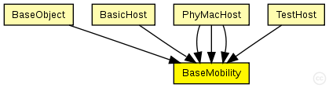
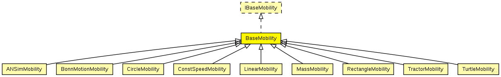

This documentation is released under the Creative Commons license
This documentation is released under the Creative Commons licenseC++ definition: click here
Module which is responsible for mobility related information like position and movement BaseMobility itself defines a static mobility pattern (means only a position, no movement). Mobility modules which extend from this module willd efien more complex movement patterns.
The following diagram shows usage relationships between types. Unresolved types are missing from the diagram. Click here to see the full picture.
The following diagram shows inheritance relationships for this type. Unresolved types are missing from the diagram. Click here to see the full picture.
| ANSimMobility (simple module) |
Uses the <position_change> elements of the ANSim tool's trace file. |
| BonnMotionMobility (simple module) |
Uses the native file format of BonnMotion (http://www.cs.uni-bonn.de/IV/BonnMotion/). |
| CircleMobility (simple module) |
Moves the node around a circle. |
| ConstSpeedMobility (simple module) |
Controls all movement related things of a host |
| LinearMobility (simple module) |
This is a linear mobility model with speed, angle and acceleration parameters. Angle only changes when the mobile node hits a wall: then it reflects off the wall at the same angle. |
| MassMobility (simple module) |
This is a random mobility model for a mobile host with a mass. It is the one used in "Optimized Smooth Handoffs in Mobile IP" by Perkins & Wang. |
| RectangleMobility (simple module) |
Moves the node around a rectangle. |
| TractorMobility (simple module) |
Moves a tractor through a field with a certain amount of rows. Since the tractor also moves around the field, the tractor travels the number of rows PLUS one rows. Consider the following piece of ascii-art for rows=2. |
| TurtleMobility (simple module) |
A LOGO-style movement model, with the script coming from XML. It can be useful for describing random as well as deterministic scenarios. |
If a module type shows up more than once, that means it has been defined in more than one NED file.
| BaseObject (compound module) | (no description) |
| BasicHost (compound module) |
The BasicHost is a compound module that implements a very simple host. It only consists of basic modules and is the most basic host you can create for the MF |
| PhyMacHost (compound module) | (no description) |
| PhyMacHost (compound module) | (no description) |
| PhyMacHost (compound module) | (no description) |
| TestHost (compound module) | (no description) |
| Name | Type | Default value | Description |
|---|---|---|---|
| notAffectedByHostState | bool | true | |
| coreDebug | bool |
debug switch for the core framework |
|
| x | double |
x coordinate of the nodes' position (-1 = random) |
|
| y | double |
y coordinate of the nodes' position (-1 = random) |
|
| z | double |
z coordinate of the nodes' position (-1 = random) |
// Module which is responsible for mobility // related information like position and movement // BaseMobility itself defines a static mobility // pattern (means only a position, no movement). // Mobility modules which extend from this module // willd efien more complex movement patterns. simple BaseMobility like IBaseMobility { parameters: bool notAffectedByHostState = true; bool coreDebug; // debug switch for the core framework double x; // x coordinate of the nodes' position (-1 = random) double y; // y coordinate of the nodes' position (-1 = random) double z; // z coordinate of the nodes' position (-1 = random) }
This documentation is released under the Creative Commons license